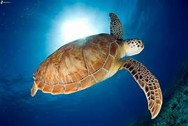
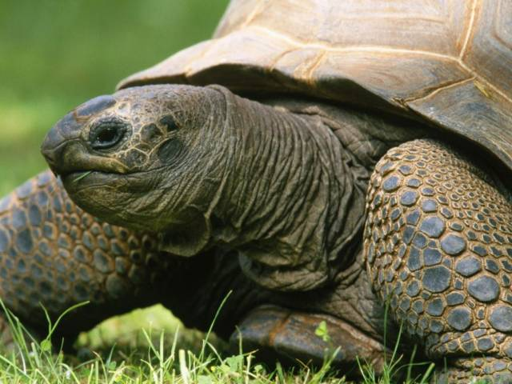

Tortuga
(testudines)
Los Testudines, comúnmente conocidos como tortugas, son un orden de reptiles que pertenecen al grupo de los Sauropsida, que también incluye lagartos, serpientes y cocodrilos. Son uno de los grupos más antiguos de reptiles vivos, con una historia evolutiva que se remonta a más de 200 millones de años. Se han adaptado a una amplia variedad de hábitats terrestres, acuáticos y semiacuáticos en todo el mundo, desde los desiertos áridos hasta los océanos tropicales. Las tortugas se caracterizan por su caparazón único, que es una estructura ósea que cubre y protege su cuerpo. Este caparazón se compone de dos partes principales: el caparazón superior, llamado caparazón dorsal o carapacho, y el caparazón inferior, llamado plastrón. La mayoría de las tortugas pueden retraer su cabeza y extremidades dentro de su caparazón para protegerse de los depredadores. En términos de anatomía, las tortugas presentan una serie de adaptaciones notables. Tienen un cráneo ancho y corto, adaptado para masticar y triturar alimentos. Su columna vertebral está fusionada con el caparazón, lo que proporciona un soporte estructural importante. Además, tienen patas modificadas en forma de aletas en el caso de las tortugas marinas, o patas con garras en el caso de las tortugas terrestres y semiacuáticas.
 
Gracias por leer!